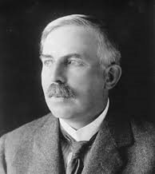

1871 - 1937 • Nükleer Fiziğin Babası
Ernest Rutherford, Yeni Zelanda'nın Nelson kentinde, 12 çocuklu bir ailenin 4. çocuğu olarak dünyaya geldi. Babasının keten fabrikasında ve çiftlikte çalışarak büyüdü. Ancak matematiğe ve bilime olan yeteneği sayesinde burs kazanarak İngiltere'ye, Cambridge Üniversitesi'ne gitti. Burada J.J. Thomson'ın (elektronu bulan kişi) ilk araştırma öğrencisi oldu.
1911 yılında bilim tarihinin en ünlü deneylerinden birini gerçekleştirdi. Çok ince bir altın levhaya pozitif yüklü alfa parçacıkları fırlattı. O zamanki atom modeline (Üzümlü Kek) göre parçacıkların hepsinin levhadan geçmesi gerekiyordu.
Ancak şok edici bir şey oldu: Bazı parçacıklar sanki bir duvara çarpmış gibi geri sekti! Rutherford bu durumu şöyle anlattı: "Bu, bir kağıt parçasına 15 inçlik bir top mermisi atıp merminin geri sekerek size çarpması kadar inanılmazdı."
Bu deney sonucunda atomun merkezinde çok küçük, yoğun ve pozitif yüklü bir "Çekirdek" olduğunu keşfetti.
Rutherford aslında bir fizikçidir ve kendini hep öyle tanımlamıştır. Ancak radyoaktif elementlerin bozunması üzerine yaptığı çalışmalarla 1908 yılında Nobel Kimya Ödülü'nü kazanmıştır. "Fizikçi olarak uyudum, kimyager olarak uyandım" diyerek bu duruma şaka yollu takılmıştır.
Rutherford sadece çekirdeği bulmakla kalmadı, 1917'de ilk kez bir atomu yapay olarak parçalamayı başardı. Azot atomunu alfa parçacıklarıyla bombardıman ederek oksijene dönüştürdü. Bu sırada açığa çıkan pozitif yüklü parçacığa "Proton" adını verdi.
Bilime yaptığı devasa katkılardan dolayı, 104 atom numaralı elemente Rutherfordiyum (Rf) adı verilmiştir. Ayrıca yetiştirdiği öğrencilerin 11'i daha sonra Nobel Ödülü kazanmıştır (Niels Bohr, James Chadwick gibi).